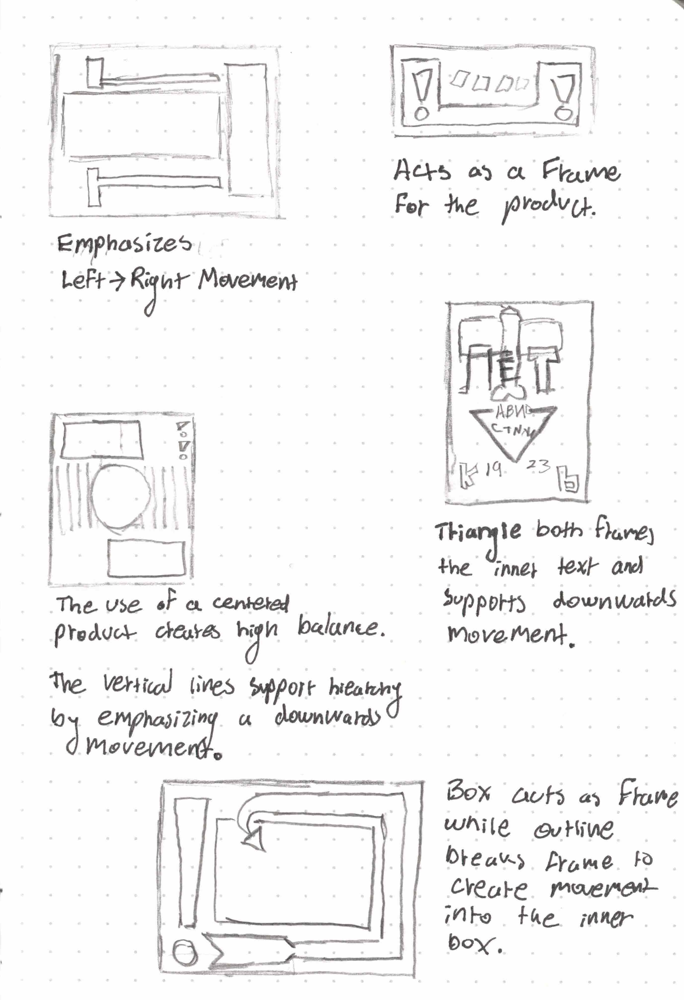
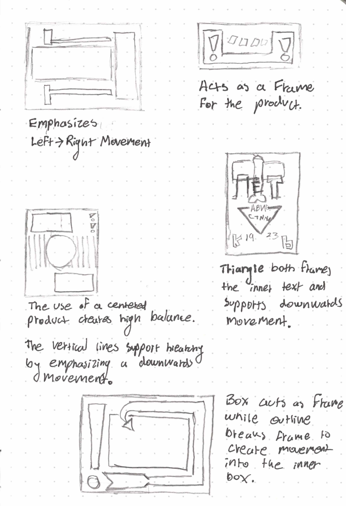

This project was part of an assignment in my Design course with the prompt of creating a concept museum exhibition poster for a Bauhaus or Constructivist artist, taking inspiration from their style in designing the poster. For my posters, I created an exhibition for Alexandr Rodchenko, who's work I studied and broke down to understand and reshape into my design. I took three approahces in designing my posters, all embodying the general takeaways I saw from Rodchenko's work - the use of contrasting shapes and mathematical layouts to support a strong movement and hierarchy.
Vinyl Playing Cards
November 2020


 

As Rodchenko followed a Constructivist approach to his design, he put more emphasis on purpose and societal value rather than expression and aesthetics. His work follows more the method of an engineer or designer because of this ideology. From what I understand of Rodchenko’s approach, the exhibition poster should follow a similar concept of mainly having a clear purpose of communicating the basics of the exhibition. Although I will attempt to capture a similar vision of his work, I should not attempt to stray too much and add shapes and layouts that are simply there for looks (without a solid purpose on the page). Knowing there are construct purposes and reasoning behind the shapes and layouts of Rodchenko’s work, I sketched the basic outline of his designs. Additionally, I then identified the individual objectives of each shape concerning the communication of the design’s message. From what I observed, Rodchenko’s utilitarian use of shapes and text is meant to strongly capture and separate the individual information on the page but also facilitate a strong sense of dynamic movement aiding in the design’s hierarchy. Furthermore, there is a strong sense of balance in much of his work.